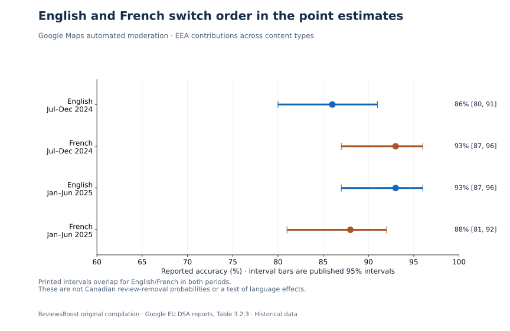
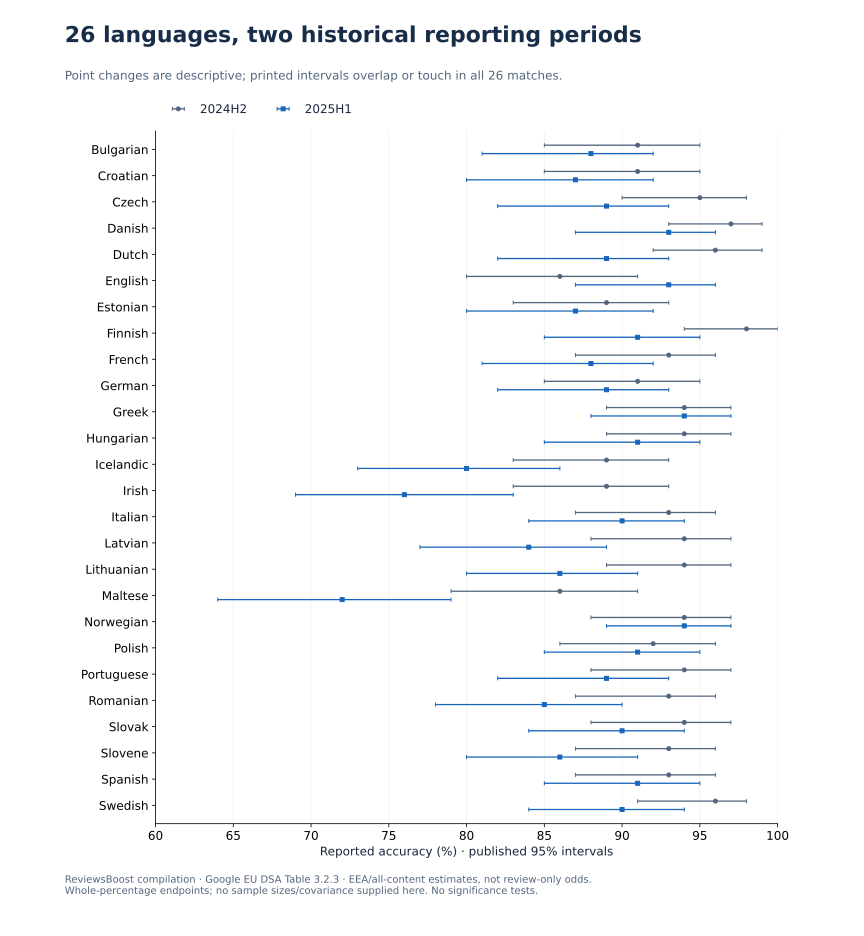
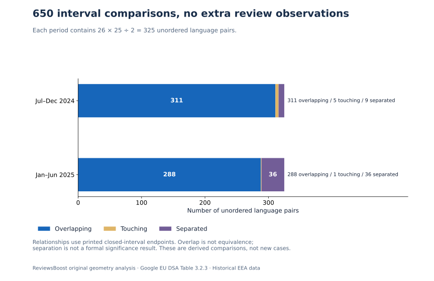

The findings, with their limits attached
A bilingual Canadian business might reasonably ask whether an English or French review is more likely to disappear. The public numbers we examine answer a different question: how often automated moderation agreed with a human reference assessment across a mixture of Google Maps contributions affecting EEA users.
- 52 source estimates: 26 languages in each of two selected historical Google reports.
- 26 matched comparisons: 23 later point estimates are lower, one is higher and two are unchanged.
- 24 overlapping and two touching interval pairs: all 26 temporal matches share values or an endpoint when the printed bounds are treated as closed intervals. This is not a significance test.
- 650 derived within-period pairs: 325 unordered language pairs per report. They are calculations, not additional review observations.
No Canadian removal odds are estimated. The source is not a sample of Canadian business disputes, merchant reports or ReviewsBoost clients. The article is new analysis of a bounded historical pair, not a claim that these are Google’s latest worldwide performance figures.
What Google actually measured
Table 3.2.3 in Google’s February 2025 report and August 2025 report supplies language-level accuracy estimates and 95% confidence intervals. The periods are July–December 2024 and January–June 2025. We selected them because they contain matching 26-language tables under the same section and stated metric.
These are automated-moderation estimates for EEA users’ contributions across content and data types, including reviews, media and facts. They are not restricted to one-star reviews, deleted content or business removal requests. Google describes human evaluation as the reference, assuming the human evaluation is the ground truth
. That describes its method; it is not independent verification by us.
The source’s overall, language-agnostic estimate is separately reported as 91% [85–95] for the earlier period and 88% [81–92] for the later one. We retain these as source context, not extra language rows. We do not average the 26 percentages into a replacement overall score: per-language sample sizes and the required weighting are unavailable here.
The European Commission’s report catalogue links to newer reporting releases. Our selection is deliberately historical and explicit. No current Canadian case forecast follows from it.
English and French change order in the point estimates
| Language | July–December 2024 | January–June 2025 |
|---|---|---|
| English | 86% [80–91] | 93% [87–96] |
| French | 93% [87–96] | 88% [81–92] |
French’s earlier point estimate is seven percentage points above English’s. In the later report, English’s is five points above French’s. The English-minus-French gap therefore moves from −7 to +5 points, a 12-point change in the descriptive gap. English itself rises seven points; those are different calculations.



That reversal is a reason to resist a simple language rule, not evidence that French or English causes a different outcome. The comparison lacks the underlying samples, their composition and any dependence between estimates. Even a reliable difference in all-content accuracy would not identify the probability that a particular reported review will be removed.
Most point estimates fall; that is not 26 tests of change
Across the 26 matches, English is the only higher point estimate. Greek and Norwegian are unchanged at the printed precision. The other 23 are lower. The largest descriptive changes are Maltese, −14 points, and Irish, −13 points.



Our interval calculation finds 24 positive-width intersections and two endpoint-only contacts. The Irish intervals meet at 83%; the Maltese intervals meet at 79%. These are contacts between printed, whole-percentage endpoints. Unknown unrounded endpoints could make the apparent boundary contact look different.
We have not shown that all languages were unchanged, nor that the point changes are statistically nonsignificant. Individual intervals are not a confidence interval for a paired difference. A defensible change test needs the relevant sampling information and dependence assumptions. We supply no p-values.
Inspect all 26 historical language matches
| Language | 2024 H2 estimate [95% interval] | 2025 H1 estimate [95% interval] | Point change | Interval relationship |
|---|---|---|---|---|
| Bulgarian | 91% [85–95] | 88% [81–92] | -3 pp | overlapping |
| Croatian | 91% [85–95] | 87% [80–92] | -4 pp | overlapping |
| Czech | 95% [90–98] | 89% [82–93] | -6 pp | overlapping |
| Danish | 97% [93–99] | 93% [87–96] | -4 pp | overlapping |
| Dutch | 96% [92–99] | 89% [82–93] | -7 pp | overlapping |
| English | 86% [80–91] | 93% [87–96] | +7 pp | overlapping |
| Estonian | 89% [83–93] | 87% [80–92] | -2 pp | overlapping |
| Finnish | 98% [94–100] | 91% [85–95] | -7 pp | overlapping |
| French | 93% [87–96] | 88% [81–92] | -5 pp | overlapping |
| German | 91% [85–95] | 89% [82–93] | -2 pp | overlapping |
| Greek | 94% [89–97] | 94% [88–97] | +0 pp | overlapping |
| Hungarian | 94% [89–97] | 91% [85–95] | -3 pp | overlapping |
| Icelandic | 89% [83–93] | 80% [73–86] | -9 pp | overlapping |
| Irish | 89% [83–93] | 76% [69–83] | -13 pp | touching |
| Italian | 93% [87–96] | 90% [84–94] | -3 pp | overlapping |
| Latvian | 94% [88–97] | 84% [77–89] | -10 pp | overlapping |
| Lithuanian | 94% [89–97] | 86% [80–91] | -8 pp | overlapping |
| Maltese | 86% [79–91] | 72% [64–79] | -14 pp | touching |
| Norwegian | 94% [88–97] | 94% [89–97] | +0 pp | overlapping |
| Polish | 92% [86–96] | 91% [85–95] | -1 pp | overlapping |
| Portuguese | 94% [88–97] | 89% [82–93] | -5 pp | overlapping |
| Romanian | 93% [87–96] | 85% [78–90] | -8 pp | overlapping |
| Slovak | 94% [88–97] | 90% [84–94] | -4 pp | overlapping |
| Slovene | 93% [87–96] | 86% [80–91] | -7 pp | overlapping |
| Spanish | 93% [87–96] | 91% [85–95] | -2 pp | overlapping |
| Swedish | 96% [91–98] | 90% [84–94] | -6 pp | overlapping |
What 650 pairwise calculations add
Each report contains 26 languages, so it has 26 × 25 ÷ 2 = 325 unordered pairs. We calculate the geometric relationship between each pair of printed intervals, for 650 derived rows across both periods. Every row retains its period and language names so another analyst can check or filter it.
| Source period | Overlapping | Touching | Separated | Total pairs |
|---|---|---|---|---|
| July–December 2024 | 311 | 5 | 9 | 325 |
| January–June 2025 | 288 | 1 | 36 | 325 |



“Separated” means the reported closed intervals have no common value. “Touching” means one shared printed endpoint. “Overlapping” means a positive-width intersection. These definitions are reproducible geometry; none is labelled a formal significance result or a fairness verdict.
In particular, 36 separated pairs is not 36 wrong moderation decisions. Nor does the increase from nine to 36 estimate a deterioration in review-removal accuracy. The underlying content mix, sampling and uncertainty have not been resolved by enumerating more pairs.
Why an accuracy percentage cannot supply removal odds
Google’s classification metrics guide defines accuracy as the proportion of all classifications that were correct
. It combines correct positive and correct negative decisions. Precision and recall ask different conditional questions.
For a simplified binary moderation example, treat “positive” as a decision to remove. Accuracy is (correct removals + correct retentions) / all decisions. The share of removals that were wrong instead uses wrong removals / all removals. The denominators differ.
| Toy model | Correct removals | Correct retentions | Wrong removals | Wrong retentions | Accuracy | Wrong share of removals |
|---|---|---|---|---|---|---|
| A | 40 | 50 | 0 | 10 | 90% | 0.0% |
| B | 50 | 40 | 10 | 0 | 90% | 16.7% |
Both constructed examples have 90% accuracy. One has no wrong removals; the other has ten wrong removals among 60 removals, or about 16.7%. This is a counterexample showing that accuracy alone does not identify error direction or the wrong-removal share. It does not reconstruct Google’s sample, and real moderation may have more than two actions.
Takaya Saito and Marc Rehmsmeier’s 2015 paper on evaluating imbalanced classifiers provides broader methodological context for choosing measures that match the question and class distribution. It is not a Google review study and supplies none of the source estimates used here. We do not assume Google’s undisclosed class mixture from that paper.
A merchant’s practical question is narrower again: will a particular review, with its policy concern and evidence, be removed after reporting? A language-level accuracy number across mixed contributions does not provide that conditional probability.
A better evidence trail for Canadian businesses
For a Toronto business serving English-speaking customers or a Montréal business working in French, this dataset supports careful interpretation, not a recommendation to change review language. It cannot establish an English/French advantage for Canadian reviews, appeal success or a provider’s removal results.
- Keep the original review text, public link and relevant dates. If a translation is useful, preserve the original alongside it.
- Identify the specific policy concern rather than relying on a language percentage or dislike of the rating.
- Keep the report, decision and any eligible appeal separate from automated detection or missing-review observations.
- Ask anyone quoting a removal success rate for its actual case denominator, period, geography and result definition.
Google’s reporting guidance distinguishes policy violations from ordinary negative feedback. Our evidence builder, Canadian policy guide and French service page address review-specific next steps. The pricing guide explains the actual fee structure; no table here guarantees deletion.
Questions readers ask about these numbers
Does Google remove English reviews more often than French reviews?
These reports do not answer that. Their metric is mixed-contribution moderation accuracy, not the frequency of review removal by language. The English/French point ordering also differs between the two selected historical periods.
Does 88% accuracy mean 12% of removed reviews were legitimate?
No. Even a complement of an overall correct-decision share uses all evaluated decisions as its denominator. It does not isolate removed reviews, identify error direction or establish legitimacy under a particular policy.
Do overlapping confidence intervals prove there was no change?
No. Our geometric labels are not equivalence or significance tests. Unknown sample sizes, dependence and rounded endpoints limit what can be concluded.
Are these Google’s latest 2026 accuracy figures?
No. This publication is dated November 2026 but explicitly analyses two historical periods ending in June 2025. Newer releases exist. The contribution is the checked compilation and derived comparisons, not a claim of newly observed platform performance.
Can a review-removal company use these figures as its success rate?
No. They do not describe the company’s accepted cases, reports, clients or outcomes. A provider-specific success claim needs its own substantiated records and result definition.
Method, provenance and limitations
We retrieved both primary PDFs on November 2, 2026, extracted Table 3.2.3 and visually checked its four table pages. Public inputs preserve each value, table/page reference, source URL and PDF SHA-256 fingerprint. Text fingerprints specify UTF-8 with line endings normalized to LF. Raw PDF/text captures remain private; the original public PDFs are linked.
The standard-library builder joins rows by reported language, subtracts point estimates in percentage points and enumerates unordered pairs. For each pair it computes min(upper bounds) − max(lower bounds): positive is overlapping, zero is touching, negative is separated. We use the published endpoints as closed intervals at their reported precision.
A separate audit checks the geometry by enumerating integer percentage ticks rather than reusing that formula. It also checks source fingerprints when captures are present, matches source rows, verifies CSV/JSON/CSVW agreement and confirms the two toy examples remain labelled constructed. This validates our compilation and arithmetic, not the original moderation labels.
No review-level sample, Canadian cohort, source sample sizes, confusion matrices, covariance, complete precision/recall breakdown or underlying unrounded intervals was obtained for this analysis. We do not infer sample sizes from interval widths, pool language percentages, calculate significance or estimate review-removal odds.
Commercial interest: ReviewsBoost offers paid review-removal assistance. This publication does not measure our success rate, establish external peer review or promise a Google ranking. Corrections can be requested through the process in our editorial policy.
Download the data, graphs and reproduction code
- 52 source-reported language estimates with provenance · CSVW column definitions.
- 26 derived same-language historical comparisons · CSVW column definitions.
- 650 derived within-period interval pairs, not observations · CSVW column definitions.
- Complete release, source provenance, derived rows and labelled toy examples.
- Source inputs, scope and fingerprints.
- Dataset builder · Independent arithmetic/source audit · Plotting script · Article builder.
- BibTeX citation · Citation File Format.
Run python build-google-maps-language-data.py, then python audit-google-maps-language-data.py. Plotting requires Matplotlib; compilation and arithmetic use Python’s standard library. Our original compilation, calculations and figures are CC BY 4.0. Attribute the estimates to Google and the compilation/derived comparisons to ReviewsBoost, retain the scope labels and identify changes. Source publishers retain rights in their own material.
ReviewsBoost Editorial Team. (2026, November 2). Google review removal and language: a historical accuracy-data audit (Version 1.0). Article, data and method. Historical EEA all-content estimates; no Canadian review-removal probabilities.
Primary sources and related methodology
- Google, EU DSA Transparency Report, February 2025, section 3.2.3 and Table 3.2.3, printed pages 28–30. Source period: July–December 2024.
- Google, EU DSA Transparency Report, August 2025, section 3.2.3 and Table 3.2.3, printed pages 32–34. Source period: January–June 2025.
- Google Machine Learning Crash Course: accuracy, recall and precision. Metric definitions, not review-specific outcome data.
- Saito, T., and Rehmsmeier, M. (2015), PLOS ONE 10(3), e0118432. DOI: 10.1371/journal.pone.0118432. General evaluation context; not a study of Google.
- Google Business Profile: report inappropriate reviews. Current policy-based reporting guidance.
- European Commission: DSA transparency report catalogue. Context and access to newer releases.